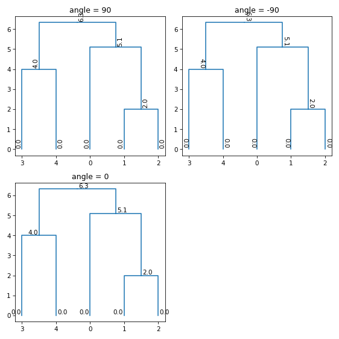

subrela.plot.matplotlib.draw_node_info function¶
-
subrela.plot.matplotlib.draw_node_info(ax, node_data, info, formatter=<class 'str'>, angle=0, location='outer', x_offset=2, y_offset=2, orientation='vertical', kws=None)[source]¶ Draw node information as texts.
- Parameters
ax (matplotlib.axes.Axes) – Subplot on which texts are drawn.
node_data (pandas.DataFrame) – Data of nodes returned by
subrela.plot.get_dendrogram_datafunction.info (pandas.Series) – Node information. Its index is a cluster index.
formatter (callable, optional) – Function for converting a value of
infointostr.angle ({0, 90, -90}, optional) – Angle of a text from the x axis in degrees.
location ({'first', 'last', 'inner', 'outer'}, optional) – Side on which a text is located. If ‘first’ and ‘last’, a text is located on the side near to the first and the last leaf, respectively. If ‘inner’, and ‘outer’, a text is located on the side near to and far from a parent node, respectively.
x_offset (float, optional) – Offset from a tree line along the x axis in pixels.
y_offset (float, optional) – Offset from a tree line along the y axis in pixels.
orientation ({'vertical', 'horizontal'}, optional) – Orientation of a tree. If
'vertical', the height direction of a tree corresponds to the y axis. If'horizontal', it corresponds to the x axis.kws (dict or None, optional) – Keyword arguments passed to
matplotlib.axes.Axes.annotatemethod.
- Returns
texts (list[matplotlib.text.Annotation]) – Texts of nodes.
- Raises
ValueError – If
kwscontains key'xytext','textcoords','horizontalalignment','verticalalignment','rotation', and'rotation_mode'.
Examples
import numpy import matplotlib.pyplot from subrela.clustering import get_clusters from subrela.plot import get_dendrogram_data from subrela.plot.matplotlib import draw_dendrogram, draw_node_info X = numpy.array([[0, -5, -5, 6, 6], [0, -1, 1, -2, 2]]) Z = get_clusters(X) leaf_data, node_data, tree_data, cut_data = get_dendrogram_data(Z) _, ax = matplotlib.pyplot.subplots(figsize=(4, 4)) draw_dendrogram(ax, leaf_data, tree_data, cut_data) draw_node_info(ax, node_data, node_data['height']) matplotlib.pyplot.show()
Change a format of texts:
import numpy import matplotlib.pyplot from subrela.clustering import get_clusters from subrela.plot import get_dendrogram_data from subrela.plot.matplotlib import draw_dendrogram, draw_node_info X = numpy.array([[0, -5, -5, 6, 6], [0, -1, 1, -2, 2]]) Z = get_clusters(X) leaf_data, node_data, tree_data, cut_data = get_dendrogram_data(Z) _, ax = matplotlib.pyplot.subplots(figsize=(4, 4)) draw_dendrogram(ax, leaf_data, tree_data, cut_data) draw_node_info(ax, node_data, node_data['height'], formatter='{:.1f}'.format) matplotlib.pyplot.show()
Rotate texts:
import numpy import matplotlib.pyplot from subrela.clustering import get_clusters from subrela.plot import get_dendrogram_data from subrela.plot.matplotlib import draw_dendrogram, draw_node_info X = numpy.array([[0, -5, -5, 6, 6], [0, -1, 1, -2, 2]]) Z = get_clusters(X) leaf_data, node_data, tree_data, cut_data = get_dendrogram_data(Z) _, axes = matplotlib.pyplot.subplots(nrows=2, ncols=2, figsize=(7.5, 7.5)) for ax, angle in zip(axes.flat, [90, -90, 0]): ax.set_title('angle = {}'.format(angle)) draw_dendrogram(ax, leaf_data, tree_data, cut_data) draw_node_info(ax, node_data, node_data['height'], formatter='{:.1f}'.format, angle=angle) axes[1, 1].set_visible(False) matplotlib.pyplot.show()
Change locations of texts:
import numpy import matplotlib.pyplot from subrela.clustering import get_clusters from subrela.plot import get_dendrogram_data from subrela.plot.matplotlib import draw_dendrogram, draw_node_info X = numpy.array([[0, -5, -5, 6, 6], [0, -1, 1, -2, 2]]) Z = get_clusters(X) leaf_data, node_data, tree_data, cut_data = get_dendrogram_data(Z) _, axes = matplotlib.pyplot.subplots(nrows=2, ncols=2, figsize=(7.5, 7.5)) for ax, location in zip(axes.flat, ['first', 'last', 'inner', 'outer']): ax.set_title('location = "{}"'.format(location)) draw_dendrogram(ax, leaf_data, tree_data, cut_data) draw_node_info(ax, node_data, node_data['height'], formatter='{:.1f}'.format, location=location) matplotlib.pyplot.show()
Offset texts:
import numpy import matplotlib.pyplot from subrela.clustering import get_clusters from subrela.plot import get_dendrogram_data from subrela.plot.matplotlib import draw_dendrogram, draw_node_info X = numpy.array([[0, -5, -5, 6, 6], [0, -1, 1, -2, 2]]) Z = get_clusters(X) leaf_data, node_data, tree_data, cut_data = get_dendrogram_data(Z) _, ax = matplotlib.pyplot.subplots(figsize=(4, 4)) draw_dendrogram(ax, leaf_data, tree_data, cut_data) draw_node_info(ax, node_data, node_data['height'], formatter='{:.1f}'.format, x_offset=5, y_offset=10) matplotlib.pyplot.show()